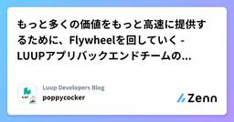

Luup Developers Blogのフィード
https://zenn.dev/p/luup_developers
電動キックボードや小型電動アシスト自転車など、電動マイクロモビリティのシェアサービス「LUUP」を展開するLuupのテックブログです。Zenn Publication利用中 【エンジニア採用中】recruit.luup.sc
フィード

「機能を作らない開発は必要？」の議論に終止符を —— アーキテクチャ改善を『経営課題』として翻訳する 1
1
Luup Developers Blogのフィード
はじめに本記事は、Luup Advent Calendar 2025の12日目の記事になります。こんにちは、株式会社LuupのSoftware部でPlatform / Technology Enabling (Backend TL) を担当している安元（やっすー）です。 終わらない議論に終止符を打つ「このコード、リファクタリングしないと将来まずいです...😖」「でも、それでお金は稼げるの？ ユーザーに何か価値があるの？🤔」「システムのリプレースが必要なので、機能開発を数ヶ月止めさせてください🥶」エンジニアとビジネスサイド（経営層・PM）の間で、どの企業でも幾度となく...
1日前

QAがSREの業務を少し齧ってみた話
Luup Developers Blogのフィード
本記事は、Luup Advent Calendar 2025の11日目の記事になります。 はじめにこんにちは、Luup Quality Team QAのかすみです。Quality TeamというSREとQAを合体させたチーム編成になってから、少しだけSREチームの業務を覗かせてもらったので、それについて書こうと思います。 （ほぼ）未知の世界へシステムテストの設計実行を中心に10年近くQA業務を行ってきました。そんな自分がSREの業務として参加するようになったものは以下です。ソフトウェアインシデントの管理Monte CarloSLOの設定方法上から感じたことなど...
3日前

もっと多くの価値をもっと高速に提供するために、Flywheelを回していく - LUUPアプリバックエンドチームの事例紹介
Luup Developers Blogのフィード
こちらの記事は、Luup Advent Calendar 2025 の9日目の記事です。 はじめにこんにちは。Luup User Product Group(以下UPG) バックエンドチーム所属の井上です。私が所属するUPGは普段ユーザーの移動を支えているLUUPアプリの開発を担っており、バックエンドチームはモバイル開発者と連携しながら機能開発をしています。その営みを改善し、より価値ある開発を早く実現することがグループの重要テーマとなっており、各チームとも左記に向けた目標を立てて開発プロセスや環境の改善に取り組んでいるところです。今回は我々バックエンドチームにおける上記の取り...
5日前

git-worktree-runnerで複数ブランチを同時に開発する 4
Luup Developers Blogのフィード
本記事は、Luup Advent Calendar 2025の8日目の記事になります。こんにちは、Operation開発チームでバックエンドを担当している大瀧です。今回は、複数ブランチでの並行開発を効率化するCLIツール「git-worktree-runner（gtr）」についてご紹介します。ローカルでのコードレビューや、機能開発の合間にhotfixの対応をしたり...。日々の開発で頻繁にブランチを切り替える場面は多いと思います。その度にgit stashで作業を退避して、後でgit stash popで戻して...という作業に消耗していませんか？あるいはgit worktree...
5日前

部内のLT会「おやつを食べる会」の取り組みをご紹介！
Luup Developers Blogのフィード
本記事は、Luup Advent Calendar 2025 の7日目の記事になります。 はじめにこんにちは、Software部でiOSエンジニアをしている大坪(つぼやん)です！今回は、部内で実施しているLT(ライトニングトーク)会についてお話しします。技術共有の場としてLT会を開催されている会社さんも多いかと思いますが、LuupのSoftware部ではどのような目的や運用で行っているのか、その裏側をご紹介します！ LT会実施までの背景現在、Software部には20名を超えるメンバーが在籍しています。このメンバーの役割は、LUUPのユーザーが利用するアプリやそのバック...
7日前

脅威モデリングを始めてみました - セキュリティリスク分析の第一歩
Luup Developers Blogのフィード
こんにちは、Luup SREチームのにわです。本記事は、Luup Advent Calendar 2025の6日目の記事です。 最初に本記事では、私が脅威モデリングを学習し、社内勉強会を主催して展開を進めている取り組みについて紹介します。セキュリティリスクを設計段階で見える化する手法として、脅威モデリングの基礎知識と、実際に勉強会で共有した内容をお伝えします。注記: 本記事のDFDや事例は一般的な架空システムの例示であり、Luupの実システム構成や運用の詳細を示すものではありません。社内の具体的情報や設定は含みません。 経緯Luupでは、高いセキュリティレベルを要求される...
8日前

Gemini Enterpriseで社内Notionを検索可能に―OAuthとACLで権限を維持(気合い)
Luup Developers Blogのフィード
本記事は、Luup Advent Calendar 2025の5日目の記事になります。こんにちは、株式会社Luupの栗村です。本記事の内容は、12/05に開催されたTECH PLAY 生成AI Conferenceのスピンオフ記事で、Gemini EnterpriseとNotionとの連携について詳説しています。 1. Gemini Enterpriseと情報検索の課題 1.1 Gemini Enterpriseとはhttps://cloud.google.com/gemini-enterpriseGemini Enterpriseは、ドキュメントツールやコミュニケーショ...
9日前
Pub/SubとTask Queue、非同期処理の適切な使い分けとは？
Luup Developers Blogのフィード
はじめに本記事は、Luup Advent Calendar 2025の4日目の記事になります。こんにちは、株式会社LuupのSoftware部でPlatform / Technology Enabling (Backend TL) を担当している安元（やっすー）です。急遽２日連続で記事を作成することとなってしまったため、もし誤りがあればお気軽にコメントください🙏🔥Luupのバックエンド開発では、Firebase (GoogleCloud) をメインに活用しており、Cloud Functionsを用いたサーバーレスアーキテクチャを採用しています。日々の開発において、ユーザ...
9日前
LUUPプロダクトにおけるアーキテクチャ選定のナラティブなアプローチ
Luup Developers Blogのフィード
はじめに本記事は、Luup Advent Calendar 2025の3日目の記事になります。こんにちは、株式会社LuupのSoftware部でPlatform / Technology Enabling (Backend TL) を担当している安元（やっすー）です。先日開催された「Architecture Conference 2025」にて、「LUUPの事業成長と変化の速さに耐えるモジュラーベースアーキテクチャの設計思想」というテーマで登壇しました。https://architecture-con.findy-tools.io/2025?m=2025/session/m...
10日前
LUUPのWebフロントエンドって？ (技術編)
Luup Developers Blogのフィード
はじめにこんにちは！Luup Advent Calendar 2025の2日目です。昨日に引き続きフロントエンドエンジニアの浅川が担当します！1日目は、LUUPのWebフロントエンドが「どのようなビジネスドメインに関わっているか」というテーマでお話しさせていただきました。1日目の記事はこちら2日目は、昨日お話しした多様なドメインを「どのような技術や組織で支えているのか」にフォーカスを当てていきます！ チームと開発領域 WebフロントエンドチームWebフロントエンドチームは正社員1名と業務委託パートナー3名の計4名体制です。少数のチームではありますが、後述する多様...
11日前
LUUPのWebフロントエンドって？ (ビジネスドメイン編)
Luup Developers Blogのフィード
はじめにこんにちは！LUUPでフロントエンドエンジニアをしている浅川です。今年もLUUPの開発メンバーでAdvent Calendarをすることになりました！1か月間、チームメンバーがLUUPのことを発信していくので、読んでみていただけると嬉しいです！初日と2日目は、LUUPのWebフロントエンドチームが電動マイクロモビリティ事業のあらゆる側面（フィールドオペレーション、車両の管理や修理、マーケティング、営業など）に深く関わっていることを紹介します。この記事を通じて、当社のフロントエンドエンジニアが向き合うビジネスドメインの広さと、その面白さや難しさをお伝えできたらいいなと思...
12日前
QAとSREが統合したQualityチームの挑戦
Luup Developers Blogのフィード
はじめにLuupに所属している、ぐりもお（@gr1m0h）です。2025年7月、私が所属していたInfra/SREチームとQAチームが統合し、新たにQualityチームが発足しました。この体制変更は、品質保証とサイト信頼性エンジニアリングを統合的に捉える試みであり、従来の組織サイロを超えた挑戦だと考えています。本記事では、SREチームのメンバーとしての視点から、私の考えを整理してお伝えします。QAとSREをどのように統合するか、そしてSREのプラクティスを用いて品質と信頼性を一貫して確保していくかについて説明したいと思います。なお、本記事では以下の用語を次のように定義していま...
19日前
タスク管理基盤をGitHub Projectsで再構築する時の実装パターン
Luup Developers Blogのフィード
はじめにLuupに所属している、ぐりもお（@gr1m0h）です。私たちのチームでは、スクラム的なアプローチを採用してタスク管理しています。プロダクトオーナーが不在であるため、チーム全員でタスクの優先順位付けやリファインメントを行い、スプリント単位で開発を進めているという特徴があります。https://zenn.dev/luup_developers/articles/sre-gr1m0h-20250605これまでNotionDBを使ってタスク管理していましたが、開発ワークフローとの分断が課題となっていたため、GitHub Projectsへの移行を決断しました。本記事では、...
2ヶ月前
iOSDC Japan 2025 にスポンサーブース出展してきました！
Luup Developers Blogのフィード
はじめにこんにちは！iOSエンジニアとして、LUUPアプリを開発している @tsuboyan5 です。2025年9月19日〜21日に開催された iOSDC Japan 2025 にて、スポンサーブース出展してきましたので、その様子をお伝えできればと思います！これまでは、try! Swift Tokyo 2025 に参加してきました！ のように参加者視点でのレポートが多かったですが、この記事では出展側からの視点でお届けします。 iOSDC Japan 2025 についてiOSDC Japan は、iOS関連技術を中心的なテーマとしたエンジニアのためのカンファレンスです。と...
2ヶ月前
Luup Serverチームの開発スケールのためのAI活用事例
Luup Developers Blogのフィード
はじめにこんにちは！株式会社Luupで、Software部 Platformグループ Technology Enabling チームに所属している安元（やっすー）です。一ヶ月ほど前とはなりますが、「AI活用Meetup」というイベントに「開発スケールのためのAI活用」というタイトルで登壇したので、内容をご紹介します。https://lapras.connpass.com/event/361288/ Luup開発チームのAI活用Luupでは、マイクロモビリティシェアのサービスを通して、人々の移動をより豊かにすることを目指しています。サービスが成長し、開発規模が拡大する中...
3ヶ月前
「マイクロモビリティシェアサービスを支えるプラットフォームアーキテクチャ」という題で登壇しました
Luup Developers Blogのフィード
はじめにLuupでSWEをしている、ぐりもお（@gr1m0h）です。8/23に広島県で開催されたオープンセミナー2025@広島に登壇しました。毎年テーマが変わるこのイベントですが、今年は「君はどこで動かすか？」がテーマでした。今回は、LuupのSREチームがビジネスやサービスの特性、そしてその変化に対してどのような課題認識を持ち、どういう対応をしてきたのかをお話ししました。オブザーバビリティツールの選定やインシデント対応の仕組み作りといった具体的な取り組みを紹介しています。https://osh.connpass.com/event/355425/ちなみに昨年は「XRE ...
3ヶ月前
【イベント】LuupはSRE NEXT 2025に初ブース出展しました！
Luup Developers Blogのフィード
こんにちは、株式会社LuupでEngineeringManagerをしている瀧川です。先日、2025年7月11日（金）〜12日（土）にTOC有明で開催されたSRE NEXT 2025に、Luupはシルバースポンサーとして協賛させていただきました！実は、Luupではエンジニア向けのカンファレンスでブース出展するのは今回が初めてだったのですが、結果として200名を超える方にブースへ訪問いただけました！多くの方に私たちのサービスやエンジニアの取り組みに触れていただく機会が作れたことはとても嬉しく思っています！この記事では、どういった思いでブース出展させていただいたかやブースの設計、当日...
5ヶ月前
Luup Infra/SREチームの現在地
Luup Developers Blogのフィード
はじめにLuupのInfra/SREチームに所属している、ぐりもお（@gr1m0h）です。この記事は、2022年に公開したLuup Infra/SREチームを紹介した記事をアップデート版です。現在の私たちのチームがどのようなフェーズにあり、どのようなミッションを掲げ、どの機能領域を担い、そして日々どのような動き方で業務に取り組んでいるのかを中心に紹介します。https://zenn.dev/luup_developers/articles/sre-horiuchi-20220829なお、本記事では以下の用語を次のように定義しています。Luup社名、株式会社Luup...
6ヶ月前
Luupインターン経験と分析業務の紹介（データサイエンティスト/アナリスト）
Luup Developers Blogのフィード
こんにちは、Data Groupでインターンをしていた柳です。2023年12月から2025年3月まで、Luupでデータサイエンティスト/アナリストとして活動していました。今回は、インターンで実際に取り組んだ業務内容を交えながら、その経験を振り返ります！ Luupインターンに興味を持った理由Luupのインターンに興味を持った理由は大きく2つあります。1つ目は、「専門分野を活かせる場面が多いこと」です。私は大学および大学院で機械学習および数理最適化を学び、研究室ではシェアモビリティの再配置（※需要と供給のバランスをとるために、車両を移動させること）にも取り組んでいました。Luu...
7ヶ月前
try! Swift Tokyo 2025 に参加してきました！
Luup Developers Blogのフィード
はじめにこんにちは！iOSエンジニアとして、LUUPアプリを開発している @tsuboyan5 です。2025年4月9日〜11日に開催された try! Swift Tokyo 2025 に、Luup の iOS エンジニア3名で参加してきました。セッションやブースを見てまわりつつ、多くのエンジニアの方とも交流できました。この記事では、その様子をお伝えできればと思います！ try! Swift Tokyo 2025 についてtry! Swiftは、Swiftを使った開発のノウハウや最新の事例を共有するために、世界中から開発者が集まるカンファレンスです。今回の try! S...
7ヶ月前